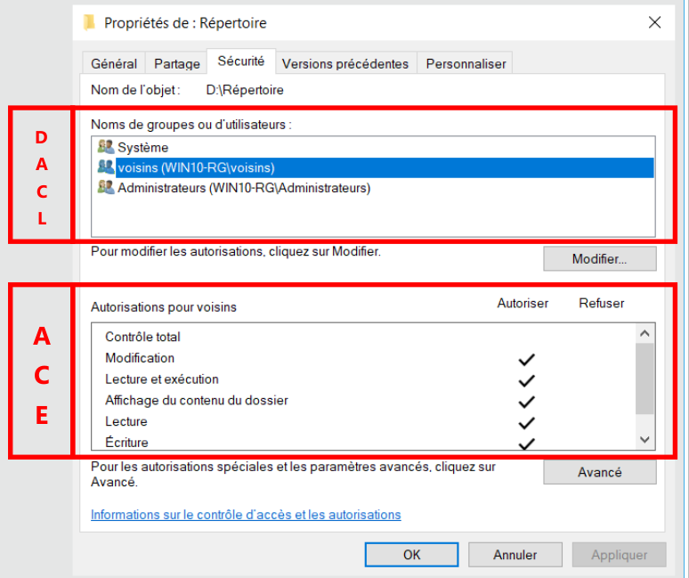
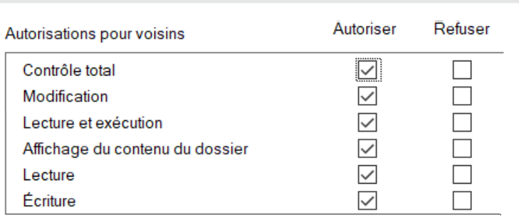
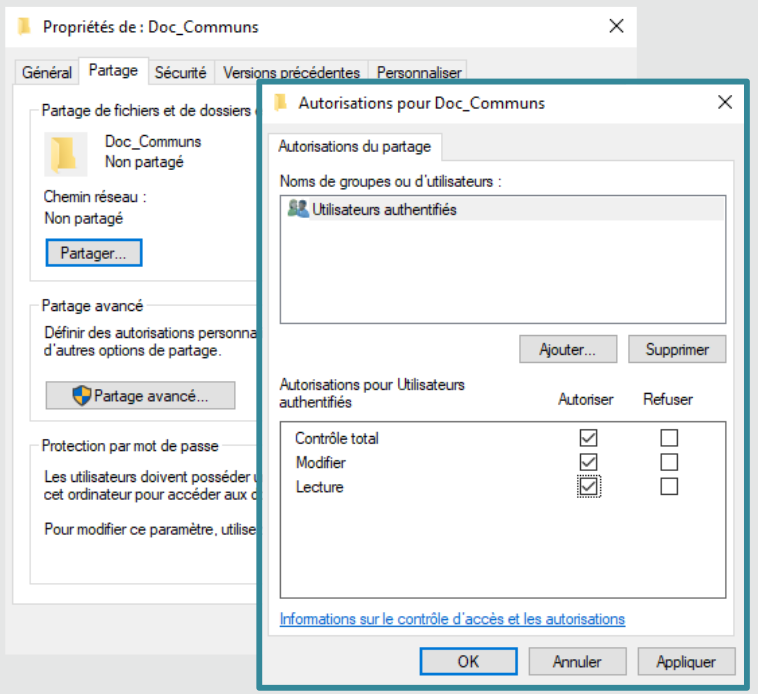
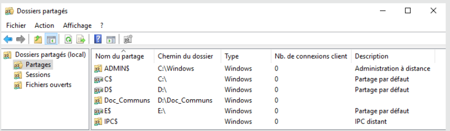
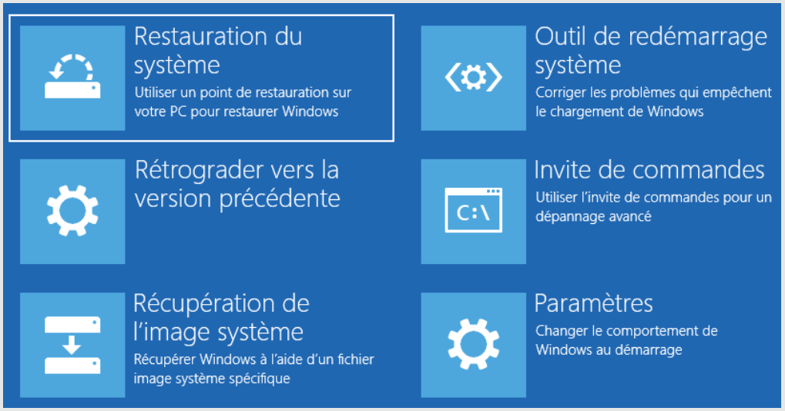

ENI 03 - Services Client Windows
| Date | du 13/12 au 24/12/2021 |
|---|---|
| Formateur | Jordan RONSAULT |
- ENI 03 - Services Client Windows
- Mod 1 - Les OS & Windows 10
- Aparté virtu
- Mod 2 - Installation de win10
- Mod 3 - Intéragir avec win10
- Mod 4 - Gestion du stockage
- Mod 5 - Les utilisateurs et les groupes
- Mod 6 - La sécurité NTFS et les ACL
- Mod 7 - La gestion du réseau et du pare-feu
- Mod 8 - Le partage des ressources
- Mod 9 - Les pilotes et les imprimantes
- Mod 10 - La maintenance du système
- Mod 11 - Plus loin avec Powershell
- Mod 12 - Intro à la capture et au déploiement d’image
- Bonus - Les stratégies de groupe local
- Index
- Récapitulatif des commandes CMD, PS, outils, etc.
- Index
- Outils
Mod 1 - Les OS & Windows 10
Définition
Un système d’exploitation (OS) est un logiciel qui pilote les dispositifs matériels et reçoit des instructions de l’utilisateur ou d’autres logiciels (ou application).
Composition OS
- un noyau
- un interprète de commande
- une interface graphique
- un système de fichier
Fonctions principales
- gérer les processeurs et la RAM
- optimiser l’execution des applications en leur attribuant les ressources
- fournir des info sur le fonctionnement de la machine
- utiliser les périphériques dans les meilleures conditions
- protéger l’accès aux ressources
Vocabulaire
- KB Knowledge Base : correctif de sécurité, fonctionnalités
- SP Service Pack : ensemble de KB
- Release : MàJ majeure
Win7 : fin en janv 2020 Win8 : fin en jan 2023
WaaS Windows as a Service
- Windows Insider : communauté de beta-tester de win10
- Build : version de win10 id par un numero (ex. 1903, 21H2). Support de 18 mois.
- Feature updates : mise à dispo d’une nouvelle build. 2 par an (majeure au printemps, mineur à l’automne)
- Quality updates : mise à jour de qualité (patch de sécurité, bugfix). Tous les 2e mardis du mois (le patch tuesday)
Les Licences Windows
Notes: la version Win Famille ne peut pas être mis dans un domaine.
- OEM Original Equipment Manufacturer : préinstallée, liée à la machine
- Retail : Vente au détail (boîte ou numérique). Licence liée à l’utilisateur, sinstalle sur un poste
- MAK Multiple Activation Key : une licence pour plusieurs poste clients
- VLK Volume Licence Key : pour déployer les systèmes clients. Nécessite le service KMS (Key Manager Service) et plus de 25 postes
- CAL Client Access Licence : licence permettant au client de solliciter le service d’un serveur microsoft
Aparté virtu
un ordi c’est minimum: - 1 proc - de la ram - un dd - une carte réseau
Hyperviseur est indispensable à la virtualisation. fait le lien entre hôte et vm. Sous la forme d’un logiciel ou d’un OS
Les differents types de réseaux
Les switchs sont virtuels :
- Host-Only
- VMnet et Lan Segment
- Bridge
- NAT (translation d’adresse)
Workstation justte bon pour maquettage, pas pour de la prod.
Mod 2 - Installation de win10
Les 64 Bits c’est quoi ? - adaptation de l’OS aux évolution des composants (meilleures perf) - prise en compte native de plus de 4 Go de RAM - meilleure protection du systeme car necessite des pilotes signés
Un mini OS est requis pour installer Windows - os leger pour installer/réparer windows - dispo dans le fichier boot.wim du support d’installation
TP01 - Installation de Win10
- Installation d’une VM win10 pro
- Importation d’une VM Win11
Outil natif permettant d’enregistrer les clic et les écrans : psr (Step Recorder) est a disposition depuis Executer.
Mod 3 - Intéragir avec win10
Objectifs - Intéragir avec le système - Découvrir l’IHM - Administrer le systeme en CLI - Démarrer avec PowerShell
CLI & Powershell
CLI
> help shutdown
> shutdown /?
/: option- quotes permettent de convertir les caractères spéciaux en caractères alphanumériques
>: redirection de flux. Ex.help shutdown > aide.txt
Notation :
COPY [/D] [/V] [/N] [/Y | /-Y] [/Z] [/L] [/A | /B ] source [/A | /B]
[+ source [/A | /B] [+ ...]] [cible [/A | /B]]
foo: obligatoire[foo]: facultatif{foo}: choisir un élément parmi ceux présents|: pipeline (séparateur d’éléments)...: éléments qui peuvent être répétés et utilisés plusieurs fois
TP02 - Prise en main de l’interface graphique
pass
TP03 - Prise en main de la cmd
REM mkdir
cmd> md CommandList
REM Create file (x2)
cmd> echo > foo.txt
cmd> help > InternalCommands.txt
REM Afficher contenu du fichier
cmd> type InternalCommands.txt
REM Copy to desktop
cmd> copy InternalCommands.txt %userprofile%\Desktop
REM List folders and subfolders ordered by size
cmd> dir /os /s %userprofile%\Desktop
dir /o: order +spour ordre par taille croissantedir /s: +subfolders
Powershell
- Langage de script orienté objet. S’appuie sur les bibliothèques .NET Framework.
- Console Graphique ISE (integrated Scripting Environment), pour manipuler les scripts.
- Des outils tiers existent et ressemblent différentes consoles dans le même environnement (windows terminal, VSCode)
La variable d’env $PSVersionTable est une variable tableau des versions de PowerShell.
- PSVersion : version de powershell dispo sur le système
- PSCompatibleVersioons : rétro-compatibilité
Les commandes de ps sont appelées les cmdlets.
- constituées d’un verbe et d’un nom séparé par un -
- verbes les plus courants: Get, Set, Remove, Add, New
- Les noms dépendent du contexte d’utilisation : LocalUser, NetAdapter, Alias, variable, etc.
Exemple
Get-Alias REM affiche liste des alias
New-LocalUser REM crée un nouvel utilisateur local dans l'ordinateur
Aide de Powershell
A besoin d’être mise à jour mais attention, il y a une file d’attente
- Mise à jour en ligne
Update-Help, ajouter-forcepour outrepasser la limite d‘1 màj par jour
Update-Help [-force]
- Mise à jour hors ligne (pré-requis: posséder un dépot local) :
Update-help -SourcePath \\chemin\vers\aide\powershell -UIculture en-US -credential <login>
Attention les traductions en FR sont pourraves et incomplètes.
- Aide est accessible depuis :
Get-Help <recherche>
Help <recherche> REM affiche l'aide page par page
Man <recherche> REM alias de Help
<recherche> -? REM dispo depuis tous les cmdlets
Exemples:
Get-Help Disable-LocalUser- Affiche l'aide sur la cmdlet passée en arg
Help help- Affiche aide page par page
Man about_Variables- Affiche le manuel d'utilisation des variables PowerShell, page par page
Astuces
Get-help -examples <recherche>- n'affiche que les examples d'utilisation d'une cmdlet
Get-help -ShowWindow <recherche>- affiche l'aide complète dans une fenêtre séparée
Get-help -Online <recherche>- affiche l'aide à jour détaillée disponible sur les serveurs Internet Microsoft (web browser requis)
Cmdlet de base et objets
Constitution d’un objet : - des propriétés - des méthodes
Exemple avec un object monBallon.
Afficher des caractéristiques de l’objet
- Afficher certaines propriétés de l’objet et leur valeurs associées. Toutes les autres propriétés sont présentes mais cachées pour faciliter la lecture
get-monBallon
- Afficher toutes les propriétés de l’objet et leurs valeurs associées
get-monBallon | select *
- Affiche seulement les propriétés demandées et leurs valeurs associées
get-monBallon | select diametre,forme,couleur
- Affiche la propriété description de l’objet monBallon et sa valeur. Equivaut à
get-monBallon|select description
(get-monBallon).description
Get-Command
La commande la plus importante à connaître. Permet de découvrir toutes les commandes disponibles.
get-command REM liste toutes les commandes
get-command get-*
get-command *printer*
get-command new-*user*
Une fois ma commande trouvée, utiliser get-help pour en savoir plus.
Modifier un object monBallon
REM Modification
set-monBallon -nom "Basket" -description "Ballon de basket"
REM Création
new-monBallon -nom "Rugby" -Forme "ovale" -Couleur "blanc" -Description "Ballon de rugby"
REM Delete
Remove-monBallon -Nom "Football"
TP04 - Premier pas avec PowerShell
- Quelle version de Powershell ?
$PSVERSIONTABLE
- Afficher le contenu d’un repertoire
ls
dir
get-childitem
- Afficher la liste des alias dans Powershell
REM Correction
get-alias -Definition get-childitem
REM Moi
get-alias | where-object ResolvedCommand -like get-childitem
- Afficher contenu d’un fichier foo.txt
cat foo.txt
type foo.txt
more foo.txt
REM less ne fonctionne pas
foo.txt
get-content foo.txt
TP05 - Manipuler l’aide de Powershell
- Afficher l’aide complète de la cmdlet Get-Alias
get-help -full get-alias
- Différence sur Win11 : oui parce que l’update-help a été faite sur win10.
- Màj dépot local (mettre vm en bridge pour avoir accès au net). Attention c’est le login AD machine hôte
update-help -SourcePath \\ad.campus-eni.fr\Campus\distrib\depot\powershell -UICulture en-us -Credential rlizot2019
- obtenir les exemples de get-help
get-help -examples get-help
- afficher la liste de tous les concepts disponibles et utilisables
get-help about_*
- en apprendre plus sur le concept d’alias
get-help -showwindow about_alias
- The aliases you create are saved only in the current session
- Aliases can be imported/exported
- historique de commande :
get-history - nombre maxi de ligne d’historique conservée définie dans la variable
$MaximumHistoryCount. Valeur par défaut : 4096 (lignes) - modifiée cette valeur :
ps> get-history -count <int32>
TP06 - Devenir autonome avec PowerShell
- afficher les commandes disponibles sur le systeme
ps> get-command
- afficher seulement les cmdlets
ps> get-command -type cmdlet
ps> get-command -comndtype cmdlet
- afficher seulement les cmdlets commençant par get
ps> get-command -commandtype cmdlet | where Name -like get*
ps> get-command -commandtype cmdlet [-Name] get*
- afficher la liste des groupes locaux présents sur le système
ps> get-command *group* REM recherche
ps> get-localgroup REM trouvé
- quelles sont les 2 propriétés des groupes locaux que le système affiche par défaut : Name, Description
- afficher les autres propriétés des groupes locaux qui ne sont pas affichés par le systeme
ps> get-localgroup | select * REM solution 1
ps> get-localgroup | format-list REM solution 2
- Afficher SID etsource principale du groupe Utilisateurs du bureau à distance
ps> get-localgroup - name *bureau*distance | select SID,PrincipalSource
Win11
- afficher les disques dur de la vm ? combien de disques ?
REM Moi
ps> get-command *drive*
ps> get-psdrive -provider filesystem
REM correction
ps> get-command *disk*
ps> get-disk
- afficher numéro et modele des disques
ps> get-disk | select Number, Model
- Afficher seulement le nom, le type de bus et le fabricant du disque no. 2
REM Moi
ps> get-disk | select Name, BusType, Manufacturer | where Number -like 2
REM Correction
ps> get-disk -Number 2 | select Name, BusType, Manufacturer
- afficher nom, status, edescription duu pilote de l’adaptateur réseau de la vm
ps> get-netadapter | select name, status, driverdescription
- afficher les membres du groupe local Administrateurs de lal vm
ps> get-localGroupMember administrateurs
Mod 4 - Gestion du stockage
Partitionner un disque consiste à séparer un dsque en plusieurs portion logiques, étanches et indépendantes.
table de partition
- détermine les caracteristiques des partitions du disque
- “sommaire” du disque
Table de partition au format MBR
- master boot record
- format historique
- lecture du mbr par le bios
- stocké sur le premier secteur du disque (512o)
- 4 partitions maximum
- ne gere pas les disques de plus de 2.2 To
- compatible avec les os 32 & 64 bits
Partitionnement
partitionnement de base
- possibilité d’étendre une partition grâce à l’espace libre contigu
- 4 partitions maximum. Pour plus de partition, il faut faire des partitions logiques (partition étendue)
Partition étendue = partition physique contenant des partitions logiques
Le MBR ne connaît que les partitions physiques et sait l’existence de partitions logiques
partitionnememnt dynamique
- evolution du disque de base
- les partitions contenues dans une partition dynamiques s’appellent des volumes (chez microsoft) et c’est un faux amis
- possibilité d’étendre les partitions sur des espaces non-contigus. Permet de gérer les disques par ensemble (RAID)
- Convertir un disque de base en disque dynamique ? Pas de perte de données.
Partitionnement GPT
Table de partitionnement au format GPT - GUID partition table - nouveau format qui gomme les inconvénients du MBR - dupliqué sur plusieurs secteurs du disque - lecture du GPT par l’UEFI (évolution du Bios depuis 2013) - taille maxi des partitions : 256 To - seulement compatibles avec les OS 64bits et les puces UEFI
[NDLR: reprendre les schemas du cours p39 et avant]
Les systèmes de fichiers
- formater une partition ou un lecteur logique, c’est installer un système de fichiers
- le FS organise les données. Une partition ou un lecteur logique formaté s’appelle un volume
- Plusieurs FS existent
NTFS
- FS par défaut chez microsoft
- nativement sécurisé (ACL Acces Control List)
- chiffrement intégré (EFS)
- compression intégrée
- support des fonctionnalités supplémentaires
- taille maxi du volume 256 To
FAT16/FAT32
- File Allocation Table
- Historique standard
- pas d’ACL
- volume de 4 Go maxi
- non sécurisé nativement
ReFS
- Resilient File System
- evolution de NTFS
- taille des volumes quasi illimitée
- correction proactive des erreurs
etc.
- ext4, VMFS, UDF… et des dizaines d’autres
Les disques durs virtuels
- VHD (Virtual Hard Drive) et VHDX
- bootable (monter le fichier disque comme une iso pour acceder à son contenu)
- taille fixe et dynamique
- manipulable comme un fichier
- montable comme un iso
- disque dur virtuel par defaut pour hyper-v
Stockage et GUI
Les outils de gestion
- Avec la console graphique diskmgmt.msc
- Avec diskpart pour la gestion en CLI
- Avec PowerShell
powershell
Get-disk- relever le numero du nouveau disque
initialize-disk -number- par défaut en GPT. Il faut préciser le paramètre
-PartitionStyle MBRpour la rétrocompatibilité New-partition -disknumber <numero> -UseMaximumSize -AssignDriveLetter- on peut assigner la lettre apres avec
set-partition -diskNumber <numero> -PartitionNumber <numero> -NewDriveLetter <newLetter> format-volume -DriveLetter <lettre>- format en NTFS par défaut
Votre volume est prêt à l'utilisation
TP07 - Gestion du stockage
utilisation de diskmgmt.msc
Rien de nouveau
utilisation de diskpart
Ouvrir PS ou CMD en admin et lancer diskpart
- formater la 3e partition de 15Go en NTFS. La nommer COMMUN, assigner une lettre au choix.
- étendre le volume COMMUN en utilisant l’espace libre restant sur le disque 1
- supprimer le volume DATA
- recréer le volume DATA avec l’ensemble de l’espace libre de deux disques
Voir Déroulement verbatim
Résumé
C:\Windows\system32>diskpart
DISKPART> list disk
DISKPART> select disk 1
DISKPART> list volume
DISKPART> select volume 1
# FORMAT + LABEL
DISKPART> format fs=ntfs label="COMMUN" quick
# ASSIGNER LETTRE
DISKPART> assign letter=Q
# EXTEND COMMUN
DISKPART> select disk 1
DISKPART> extend
# REMOVE DATA
DISKPART> select volume 3
DISKPART> remove (supprime la lettre du lecteur)
DISKPART> select disk 0
DISKPART> select volume 3
DISKPART> assign letter=D
DISKPART> delete volume
# RECREATION OF "DATA" VOLUME
DISKPART> select disk 1
DISKPART> create volume simple disk=1
DISKPART> assign letter=D
DISKPART> format fs=ntfs label="Data" quick
DISKPART> extend disk=2
Investigation sur la VM win11 avec Powershell
- afficher le numéro, la taille et le type de table de partitionnement des disques durs présents sur la VM
REM Moi
ps> get-partition | select DiskNumber, Size, Type
REM Correction (la bonne solution)
ps> get-disk | select DiskNumber, PartitionStyle, Size
- afficher la lettre de lecteur le nom, la taille totale des volumes qui possèdent un FriendlyName
REM Moi
ps> get-volume | select DriveLetter, FileSystemLabel, Size, SizeRemaining
REM Moi
ps> set-volume -DriveLetter "C" -NewFileSystemLabel "SYSTEM"
Bonus: sur la vm win10
Sur le lecteur ARCHIVE, créer des repertoires et des fichiers. Convertir le format du systeme de fichiers de FAT32 à NTFS sans perte de données.
REM Boucle
cmd> for($i=0;$i -lt 8;$i++) { md rep$i; echo $i > file$i.txt }
REM Formatage (/v:verbose)
cmd> convert A: /fs:nfts /v
Mod 5 - Les utilisateurs et les groupes
Les objets utilisateurs et groupes : - notions d’uitilisateur - les profil utilisateurs - les groupes - le contrôle de compte utilisateurs
Utilisateurs
Accès au SI validé par
- couple login + mdp
- biométrie (Windows Hello)
- objet tiers (carte à puce, badge, etc.)
- 2e authentification possible dans certains contexte spécifique (SMS, mail)
Utilisateur local
- Propre à chaque machine
- stocké dans la bdd locales SAM ( Base Security Account Manager)
- l’user ne peut pas exploiter que les ressources de l’ordinateur source
Utilisateur du domaine
- stocké dans la bdd commune (annuaire Active Directory). Sur un serveur de l’entreprise (controleur de domaine) ou chez un prestataire (Microsoft Azure)
- authentification KKerberos sécurisée par le réseau
- un user peut ouvrir une session sur toutes les machines du domaine
- un user (local, de domaine) est identifiée par le système grâce à son SID (Security IDentifier)
Ouverture de session
- pour les user locaux
- utiliser un compte present dans la base SAM
- sont affichés par défaut sur l’ecran d’accueil
- pour les user du domaine
- jonction du poste au domaine de l’entreprise indispensable au préalable
- domaine sélectionné par défaut (possibilité de changer de domaine)
Categories d’utilisateurs
- Standard :
- pour utiliser les ressources du pc
- être membre du groupe Utilisateurs
- Administrateur
- pour utiliser et modifier les ressources du pc
- être membre du groupe Administrateurs
- l’utilisateur créé à l’installation du système est membre du groupe Administrateurs
- le compte administrateur est désactivé par défaut
- Le compte Invité
- pour une utilisation restreinte des ressources du pc
- pas besoin de mdp pour accèder aux ressources
- ce compte est desactivée par défaut
TP08 - Les utilisateurs et les groupes
CMD.EXE
- Afficher les infos du user account François
cmd> net user françois
- Afficher les membres du groupe Administrateurs
cmd> net localgroup administrateurs
- Créer un utilisateur ROMAIN avec mdp. Attention le mdp ne devra pas être visible en CLI
cmd> net user Romain * /ADD
- Ajouter Romain au groupe L_Responsables
cmd> net localgroup L_Responsables Romain /ADD
- Afficher le SID du current user, puis les SID des groupes dont il est membre
cmd> whoami /USER
cmd> whoami /USER /GROUPS
POWERSHELL sur WIN11
- Afficher la liste des utilisateurs sur le systeme (nom, sid, description)
ps> get-localuser | select name,sid,description
- Afficher les informations suivantes pour l’utilisateur James
ps> get-localuser james | select fullname, name, description, objectclass, lastlogon
- Ajouter la description “Compte générique avec privilèges d’administration”
ps> set-localuser -Name "adm" -Description "Compte générique avec privilèges d'admin"
- Afficher le nom et le SID des membres du groupe local L_SupportInfo
ps> get-LocalGroupMember -Name "L_SupportInfo" | select name,sid
Bonus : Création d’utilisateur
ps> $pswd=Read-Host -AsSecureString
ps> New-LocalUser "francois" -Password $pswd -FullName "François" -Description "Responsable Info" -UserMayNotChangePassword -PasswordNeverExpires
ps> Add-LocalGroupMember -Group "L_Reesponsables" -Member "francois"
ps> new-localuser "francois" -Password $mdp -FullName "François" -UserMayNotChangePassword -PasswordNeverExpires
ps> new-localuser "romain" -Password $mdp -FullName "Romain" -UserMayNotChangePassword -PasswordNeverExpires
ps> new-localuser "yann" -Password $mdp -FullName "Yann" -UserMayNotChangePassword -PasswordNeverExpires
ps> new-localuser "voisin1" -Password $mdp -FullName "Voisin" -UserMayNotChangePassword -PasswordNeverExpires
ps> new-localuser "voisin2" -Password $mdp -FullName "Voisin" -UserMayNotChangePassword -PasswordNeverExpires
ps> new-localgroup L_Responsables
ps> new-localgroup L_Voisins
ps> new-localgroup L_Informatique
ps> Add-LocalGroupMember -Group "L_Responsables" -Member "francois"
ps> Add-LocalGroupMember -Group "L_Informatique" -Member "francois"
ps> Add-LocalGroupMember -Group "Administrateurs" -Member "francois"
ps> Add-LocalGroupMember -Group "L_Voisins" -Member "voisin1"
ps> Add-LocalGroupMember -Group "L_Voisins" -Member "voisin2"
ps> Add-LocalGroupMember -Group "L_Responsables" -Member "romain"
Bonus 2: Vos voisins pourront ouvrir une session uniquement du lundi au vendredi entre 9h et 17h
ps> net user voisin1 /time:l-v,9:00,17:00
Oui, les jours sont en français…
Mod 6 - La sécurité NTFS et les ACL
- NTFS = New Technology File System
- ACL = ?
Sur un volume formaté en NTFS :
- tous les repertoires et tous les fichiers sont soumis à la sécurité NTFS
- des autorisations définissent des privilèges d’accès
- l’utilisateur présente son jeton d’accès, qui est filtré par la ressource
- les autorisations sont stockées dans l’index du système de fichier NTFS
- consultable, modifiable dans l’onglet sécurité de chaque objet
Permissions
L’onglet Sécurité
- accessible via les propriétés d’un objet
- DACL (Liste des contrôles d’accès discretionnaire)
- les DACL filtrent les groupes locaux, les groupes prédéfinis (généralement Administrateurs ou Utilisateurs), les entités de sécurités, les utilisateurs
- ACE (Access Control Entry) privilèges d’accès du groupe en question

- Pour les besoins courants, les ACE de base sont utilisées et cumulatives
- Configurable depuis le menu modifier
- Lecture : affichage, lecture, lecture et execution
- Modification : ecriture, modification
- Contrôle total

- Pour les besoins spécifiques, des autorisations spéciales peuvent être configurées (via menu Avancé).
- Permet d’affiner les privilèges (création de fichier, suppression de subfolder, etc)
Permissions basées sur des règles explicites
- un groupe absent de la DACL se verra l’accès refusé (refus implicite)
- chaque règle peut accorder des privilèges (autoriser) ou les ôter (refuser)
- plusieurs règles d’accès peuvent s’appliquer à un même utilisateur (la règle la plus permissive l’emporte)
- le refus explicite l’emporte sur l’autorisation
Héritage
Heritage
- Par défaut, un répertoire propage ses autorisations à ses objets enfants.
- Les autorisations héritées apparaissent grisées et ne sont pas modifiables.
- Une autorisation d’accès l’emporte sur un refus explicite hérité.
Pour les modifier, il faut
- modifier les autorisations sur le dossier parent (voir parfois celles du volume racine)
- “casser” l’héritage (à effectuer avec précaution)
Copie
Que se passe-t-il lors de la copie ? Du déplacement ?
| Au sein d’une même partition/volume | Entre 2 partitions/volumes | |
|---|---|---|
| Déplacement | Conservation | Héritage |
| Copie | Héritage | Héritage |
Une fois les ACL configurées, que faire ? - tester les accès avec les utilisateurs - et/ou vérifier les accès depuis l’onglet Accès Effectif du menu Avancé
- A manipuler avec précaution
- Bonne pratiques pour éviter les effets de bord et les mauvaises surprises
- privilégier les groupes dans les DACL
- utiliser au max ACE de base
- garder en tête les mécanismes d’héritage (attention aux copies, aux déplacements)
- privilégier l’héritage
- privilégier le refus implicite
- toujours tester/vérifier les accès aux ressources
- attention au double jeton d’accès des administrateurs
Conclusion
- La gestion des ACL est indispensable
- ACL = DACL + ACE
- liste de controle d’accès
- liste de contrôle d’accès discrétionnaire
- entrées de contrôle d’accès
- Tester les accès
- Respecter les bonnes pratiques Microsoft
Notes: Toujours passer par des groupes, ne jamais ajouter un utilisateur directement dans un DACL
TP09 - NTFS & ACL
VM Win10 - GUI
Objectif: Sur la VM win10, configurer les autorisations d’accès sur les dossiers donnés.
Sur le volume DATA, créer le dossier Echange.
-
Quelles sont les autorisations positionnées par défaut sur le dossier Echange .
- utilisateur authentifiés (autoriser)
- systeme (controle total)
- administrateur (control total)
- utilisateur (lecture & exe + affichage + lecture)
-
Configurer les autorisations d’acces du dossier Echange
- Les voisins pourront modifier tous les objets et sous-objets du dossier
- Les admin auront le controle total
- Les utilisateurs du poste auront les droit en lecture
- Tester
Notes : - Desactiver l’héritage pour pouvoir modifier les permissions - Modifier “Utilisateurs authentifiés” (CORRECTION : supprimer complètement)
- Sur volume TOOLS, créer les dossiers “logiciels” et “manuels d’utilisation”
- Yann et François ont les droits en modif de ces dossiers
- Les utilisateurs standards ont les droits en lecture
- Les admin ont le contrôle total
Pour tester le bons fonctionnement des autorisations : clic-droit sur le dossier partagé > propriétés > sécurité > accès effectif
VM Win11 - Powershell
- Afficher la liste des droits d’accès au dossier 2022 du lecteur M:
ps> get-acl m:\2022
- Modifier les ACL d’un dossier
ps> set-acl [...]
Mod 7 - La gestion du réseau et du pare-feu
Sommaire
- rappel des bases de réseau
- configurer la carte et l’emplacement réseau
- manipuler le pare-feu windows
Carte réseau
Accès carte réseau : ncpa.cpl
Configuration
Quels paramètres ?
- Adresse IP et masque de sous-réseau
- Passerelle (ip du router)
- Serveurs DNS préféré et auxiliaire
Le Type d’adressage
- Statique : configuré manuellement
- Dynamique : fourni par le DHCP ou APIPA
APIPA : Communication temporaire sur le réseau local
- obtenir automatiquement une adresse grâce à l’OS Windows si aucun serveur DHCP n’est joignable
- réseau 169.254.0.0/16
- communication sur le réseau local possible
Type de réseau possible
- Réseau privé sur un poste autonome
- Réseau avec domaine non-modifiable si le poste est joint à un domaine
- Réseau public si aucune passerelle n’a été définie, si le domaine n’a pas été détecté pour les postes en domaine, si vous refusez de rendre votre ordinateur visible sur le réseau, etc.
Outils
- ipconfig : afficher la config et intéragir avec la pile réseau
- ping : tester la connectivité
- tracert : tester la route empruntée par les paquets TCP/IP
- nslookup : diagnostic de la résolution de nom d’hôte
Pare-feu
Rôles :
- délimiter quels flux réseau sont autorisés en entrée et en sortie
- protéger le poste contre les accès non autorisées
- élément de la stratégie globale de sécurité de l’entreprise
Activé par défaut
3 Niveaux de configuration
- “Utilisateur” depuis le composant Vérifier l’état du pare-feu pour l’activation/désactivation
- “Programme” avec la fonction Autoriser une application via le pare-feu Windows
-
“Avancé” avec la console Pare-feu windows defender avec fonctions avances de sécurité
-
firewall.cpl : accès à l’interface du pare-feu
TP10 - Configuration du réseau
Objectif : configurer le poste pour qu’il communique sur le réseau.
Win10
Configurer les accès réseau
- ip (static) : 10.54.42.69
- masque : 255.255.0.0
- réseau : 10.54.0.0
- DNS préféré : 10.35.0.3
- passerelle : 10.54.255.254
Utilisation de ping, tracert, nslookup
Parefeu
-
Autoriser le bureau à distance :
ps> firewall- Autoriser une appli > bureau à distance > cocher [x] privé
-
Dans la console Pare-feu et fonctions avancées, utiliser la règle prédéfinie permettant d’autoriser le ping
- “Diagnostic de réseau de base (ICMP) IPv4” > Activer
- à faire dans règles de trafic entrant, puis sortant
Bonus Win10 - powershell
-
Faire des test de connections réseaux (comme un ping mais sans visibilité sur la perte de réseau)
ps> test-connection www.nainwak.com
-
Créer une régle personalisée dans le parefeu permettant d’autoriser les requêtes ICMP Echo vers notre VM, requêtes provenant de notre réseau local
Ensuite, ouvrir “Assistant nouvelle règle entrante” > protocole ICMP > nom ping entrant. Puis pareil dans le sens de la sortie. (?!)ps> firewall # pour ouvrir l'IHM du parefeu
TP final de synthèse (teams)
Créer une VM Windows 11 avec WorkStation
- Configuration typique
- OS invité : Windows 11 x64
- Nom de la VM : winfinal-RL
- Emplacement : dans un sous-dossier winfinal-RL du dossier VM
- Disque dur : 60 Go
- RAM : 4 GB
- CPU : 2 processeurs, 2 coeurs
- Réseau : Host-Only
- Options : dans onglet options > contrôle d’accès > encrypter la VM
-
Ajout périphérique : TPM (Trusted Platform Module)
-
Renommer l’OS pour qu’il porte le même nom que la VM.
- Mettre les mise à jour en pause
Interface Graphique
- Réduire le disque C: de 30 Go
- Créer une partition principale de 30 Go. Formater en NTFS, attribuer la lettre D: et le label TOOLS
- Dans Workstation, ajouter un disque NVMe de 45 Go. Initialiser le disque graphiquement dans diskmgmt.msc
CMD.exe
- Créer un volume avec intégralité de l’espace disponible sur le disque de 45 Go, attribuer la lettre E: et le label DATA
cmd> diskpart DISKPART> list disk DISKPART> select disk 1 DISKPART> create partition primary DISKPART> format fs=ntfs label="DATA" quick DISKPART> assign letter=E
Powershell
- Dans Workstation, ajouter un disque de type SCSI de 20 Go
- Initialiser le disque dans powershell
- Créer une nouvelle partition de 20 Go ayant la lettre F: et le label Echange
ps> get-disk
# Initialize
ps> initialize-disk -Number 2
# Partition + Format + Label
ps> new-partition -DiskNumber 2 -UseMaximumSize | Format-Volume -FileSystem NTFS -New-FileSystemLabel Echange
# Assign Letter
ps> Get-Partition -DiskNumber 2 -PartitionNumber 2 | Set-Partition -NewDriveLetter F
-
Afficher au format liste le nom, la lettre de lecteur, le type et la taille des volumes de type NTFS et ayant une taille supérieure à 20 Go
ps> get-volume | where -FilterScript {$_.FileSystemType -like "NTFS" -and $_.Size -gt "20GB"}
-
Affiner l’affichage du résultat précédent
ps> get-volume | where -FilterScript {$_.FileSystemType -like "NTFS" -and $_.Size -gt "20GB"} | select DriveLetter,FileSystemType,FileSystemLabel,Size | fl
Gestion des utilisateurs et des groupes
Powershell
-
Créer les groupes L_Info avec description “Groupe informatique”, et L_Compta avec “Groupe Comptabilité”
ps> new-localgroup "L_Info" -Description "Groupe Informatique" ps> new-localgroup "L_Compta" -Description "Groupe Comptabilité"
-
Créer les utilisateurs suivants, sachant qu’ils ne pourront pas changer leur mdp et que celui-ci n’expire pas
| AD | Nom Complet | Description | Groupes |
|---|---|---|---|
| adupond | Alex Dupond | Directeur Informatique | L_Info, Administrateurs |
| pmartin | Pierre Martin | Comptable Groupe | L_Compta |
# Mot de passe
ps> $mdp=Read-Host -AsSecureString
****
# Création utilisateurs
ps> $user="adupond"; $fullname="Alex Dupond"; $descr="Responsable SI"
ps> New-LocalUser $user -Password $mdp -FullName $fullname -Description $descr -UserMayNotChangePassword -PasswordNeverExpires
ps> $user="pmartin"; $fullname="Pierre Martin"; $descr="Comptable"
ps> New-LocalUser $user -Password $mdp -FullName $fullname -Description $descr -UserMayNotChangePassword -PasswordNeverExpires
# Ajout aux groupes
ps> Add-LocalGroupMember -Group L_Info -member adupond -verbose
ps> Add-LocalGroupMember -Group Administrators -member adupond -verbose
ps> Add-LocalGroupMember -Group L_Compta -member pmartin -verbose
- Afficher au format liste le nom, le nom complet, le SID et la description de l’utilisateur pmartin
ps> get-localuser pmartin | select fullname, name, SID, description | fl
FullName : Pierre Martin
Name : pmartin
SID : S-1-5-21-312851257-2639103893-4125210144-1005
Description : Comptable
Gestion des dossiers et des droits NTFS
Notes ICACLS.EXE
ps> icacls.exe /?
ICACLS name /save aclfile [/T] [/C] [/L] [/Q]
stores the DACLs for the files and folders that match the name
into aclfile for later use with /restore. Note that SACLs,
owner, or integrity labels are not saved.
ICACLS directory [/substitute SidOld SidNew [...]] /restore aclfile
[/C] [/L] [/Q]
applies the stored DACLs to files in directory.
ICACLS name /setowner user [/T] [/C] [/L] [/Q]
changes the owner of all matching names. This option does not
force a change of ownership; use the takeown.exe utility for
that purpose.
ICACLS name /findsid Sid [/T] [/C] [/L] [/Q]
finds all matching names that contain an ACL
explicitly mentioning Sid.
ICACLS name /verify [/T] [/C] [/L] [/Q]
finds all files whose ACL is not in canonical form or whose
lengths are inconsistent with ACE counts.
ICACLS name /reset [/T] [/C] [/L] [/Q]
replaces ACLs with default inherited ACLs for all matching files.
ICACLS name [/grant[:r] Sid:perm[...]]
[/deny Sid:perm [...]]
[/remove[:g|:d]] Sid[...]] [/T] [/C] [/L] [/Q]
[/setintegritylevel Level:policy[...]]
/grant[:r] Sid:perm grants the specified user access rights. With :r,
the permissions replace any previously granted explicit permissions.
Without :r, the permissions are added to any previously granted
explicit permissions.
/deny Sid:perm explicitly denies the specified user access rights.
An explicit deny ACE is added for the stated permissions and
the same permissions in any explicit grant are removed.
/remove[:[g|d]] Sid removes all occurrences of Sid in the ACL. With
:g, it removes all occurrences of granted rights to that Sid. With
:d, it removes all occurrences of denied rights to that Sid.
/setintegritylevel [(CI)(OI)]Level explicitly adds an integrity
ACE to all matching files. The level is to be specified as one
of:
L[ow]
M[edium]
H[igh]
Inheritance options for the integrity ACE may precede the level
and are applied only to directories.
/inheritance:e|d|r
e - enables inheritance
d - disables inheritance and copy the ACEs
r - remove all inherited ACEs
Note:
Sids may be in either numerical or friendly name form. If a numerical
form is given, affix a * to the start of the SID.
/T indicates that this operation is performed on all matching
files/directories below the directories specified in the name.
/C indicates that this operation will continue on all file errors.
Error messages will still be displayed.
/L indicates that this operation is performed on a symbolic link
itself versus its target.
/Q indicates that icacls should suppress success messages.
ICACLS preserves the canonical ordering of ACE entries:
Explicit denials
Explicit grants
Inherited denials
Inherited grants
perm is a permission mask and can be specified in one of two forms:
a sequence of simple rights:
N - no access
F - full access
M - modify access
RX - read and execute access
R - read-only access
W - write-only access
D - delete access
a comma-separated list in parentheses of specific rights:
DE - delete
RC - read control
WDAC - write DAC
WO - write owner
S - synchronize
AS - access system security
MA - maximum allowed
GR - generic read
GW - generic write
GE - generic execute
GA - generic all
RD - read data/list directory
WD - write data/add file
AD - append data/add subdirectory
REA - read extended attributes
WEA - write extended attributes
X - execute/traverse
DC - delete child
RA - read attributes
WA - write attributes
inheritance rights may precede either form and are applied
only to directories:
(OI) - object inherit
(CI) - container inherit
(IO) - inherit only
(NP) - don't propagate inherit
(I) - permission inherited from parent container
Examples:
icacls c:\windows\* /save AclFile /T
- Will save the ACLs for all files under c:\windows
and its subdirectories to AclFile.
icacls c:\windows\ /restore AclFile
- Will restore the Acls for every file within
AclFile that exists in c:\windows and its subdirectories.
icacls file /grant Administrator:(D,WDAC)
- Will grant the user Administrator Delete and Write DAC
permissions to file.
icacls file /grant *S-1-1-0:(D,WDAC)
- Will grant the user defined by sid S-1-1-0 Delete and
Write DAC permissions to file.
CMD
-
Sur le volume ECHANGE, créer les dossiers “SRV_Info” et “SRV_Compta”
cmd> cd /d F: cmd> md srv_info cmd> mkdir srv_compta
-
Accorder à adupond le contrôle total récursif sur le dossier F:\srv_info.
cmd> icacls f:\SRV_Info /grant L_Info:(OI)(CI)f /t processed file: f:\SRV_Info Successfully processed 1 files; Failed processing 0 files
Attention Ca ne marche qu’avec cmd.exe. La commande est différente avec Powershell, ou ne marche juste pas…
Notes ICACLS.exe
- (OI) - object inherit
- (CI) - container inherit
- (IO) - inherit only
- (NP) - don’t propagate inherit
- (I) - permission inherited from parent container
- F - grants total control
- /T permission descend dans arborescence (sous-dossier etc.).
- Exemple :
icacls file /grant Administrator:(D,WDAC)- Will grant the user Administrator Delete and Write DAC permissions to file.
GUI
- Accorder à pmartin les droits en lecture/execution (récursif) sur le dossier F:\srv_compta
- clic-droit sur dossier > propriété > sécurité
- avancé > désactiver héritage (permet de modifier les droits)
- supprimer les utilisateurs authentifiés pour éviter les effets de bord
- ajouter les droits à pmartin
Mod 8 - Le partage des ressources
Objectifs
- Utiliser le réseau pour accèder aux infos de l’entreprise
- Accéder aux documents via des partages
- Accèder aux machines grâce aux Bureau à Distance
Principes du partage
Le partage permet d’accèder à une ressource hébergée par un serveur, depuis un client ou à travers le réseau
- Les ressources ? … peuvent être des fichiers, des imprimantes.
- Les serveurs ? … tout type de système connecté au réseau de l’entreprise peut potentiellement partager ses ressources (serveur, poste client, copieur, tablette, etc.)
- Les clients ? … tout type de système connecté au réseau peut accéder aux ressources partagées de l’entreprise (serveur, poste client, copieur, tablette, etc.)
Qui peut partager ? Il faut avoir des droits admin car partager, c’est modifier le système !
Qui a accès au partage ?
- une authentification est requise (compte local du domaine)
- 3 niveaux d’accès sont définis sur la ressource partagée : Lecture, Modifier, Contrôle Total
- 2 vérifications d’identité sont effectuées: 1) au niveau du partage, 2) puis au niveau des droits NFTS
- Les autorisations du partage sont restrictives
Accès
Comment accéder aux fichiers partagés depuis Windows 10 ?
- De façon momentanée depuis l’explorateur avec le chemin UNC \\serveur\partage
- Durablement avec la fonctionnalité Connecter un lecteur réseau. Les lecteurs mappés sont mémorisés avec le profil utilisateur.
- En ligne de commande avec net use G: \\serveur\partage. La commande net view permet de lister les partages.
- En powershell avec la cmdlet New-SmbMapping. Ex. New-SmbMapping -LocalPath 'R:' -RemotePath '\\srv-fic\Compta'
Comment partager des fichiers ?
Depuis l’explorateur de fichier
- ouverture du partage sur le conteneur
- partage de base : partage simplifié orienté utilisateur (à éviter)
- partage avancé : onglet Partage depuis les propriétés du conteneur
- Par défaut, l’entité Tout le monde est en Lecture
Bonne pratique : préférez l’entité sécurité Utilisateurs Authentifiés

Depuis le composant MMC “Dossiers Partagés” (fsmgmt.msc)
- fsmgmt.msc : Composant MMC
- Virtualisation des partages actifs
- assistant de création de partages
- Vues Sessions et Fichiers Ouverts
- Affichage des partages administratirs générés par le système

En ligne de commande
CMD
cmd> net sharepermet de lister et configurer les partages
Exemple :
cmd> net share commun=d:\Note_de_Service /grant:"utilisateurs authentifiés",FULL
Powershell
- cmdlet équivalente :
ps> New-SmbShare
Exemple :
ps> New-SmbShare -Name "VMSFiles" -Path "C:\ClusterStorage\Volume1\VMFiles" -FullAccess "Authenticated Users"
Types d’accès disponibles:
- -FullAccess monUser
- -ChangeAccess monUser
- -ReadAccess monUser
- -NoAccess monUser
Demo partage
cmd> net share
cmd> net share commun
cmd> net share commun /delete
cmd> net share commun=G:\demopartage /grant:utilisateurs,full
Même chose que :
ps> New-SmbShare -Name "Commun" -Path "G:\demopartage" -FullAccess "Utilisateurs"
Session à Distance
- Accès distant au poste
- avec Bureau à Distance
- authentification avec un compte valide (local ou domaine)
- Nécessite des privilèges spécifiques
- Même niveau de fonctionnement qu’une session locale
- Utilisation courante
- maintenance de serveur à distance
- accès à son poste de travail (VPN)
-
Les Limites
- mode maintenance sur un poste client (pas d’intéraction possible avec l’utilisateur)
- sur les serveurs, seulement 2 sessions simultanées sont permises
-
Connection via l’outil Connexion Bureau à Distance (en ligne de commande : mstsc)
- Connection en ligne de commande, ex. mstsc /v:serveur
Le poste cible a besoin d’être configuré pour permettre le bureau à distance - activer l’Assistance à distance + Système > menu Paramètres systeme avancés > onglet Utilisation à distance - 2 niveaux d’authentification : authentification standard ou authentification NLA - par défaut, l’accès est autorisé pour les admin
Il faut parfois aussi autoriser le protocole RDP dans le parefeu (port 3389). Voir la règle prédéfinie à activer dans le sens sortant et entrant.
TP11 - Partage et session distante
Win10
- Partager le dossier Echange, y qué s’apélorio NeighborShare. Permettre aux voisins de modifier le contenu.
ps> new-smbshare -Name "Echange" -Path "F:\Echange" -ChangeAccess "L_Voisins"
Win11
Powershell
- Lister les partages disponibles
ps> get-smbshare
- Quel dossier de l’arborescence du système est partagé par le nom ADMIN$
ps> get-smbshare ADMIN$
- Qui peut accéder au partage N$
ps> Get-SmbShareAccess N$
Bureau à Distance
- Activer le bureau à distance : Systeme > Bureau à distance > Activer
- Permettre aux utilisateurs lebron et giannys d’ouvrir une session RDP sur la vm win11 Systeme > Bureau à distance > Utilisateur du BàD > Ajouter > nom utilisateur
Mod 9 - Les pilotes et les imprimantes
Pilotes
- Prise en charge du matériel
- plug n play (prise en charge à chaud)
- non plug n play : necessite un redémarrage (plus rare)
- Plusieurs mode de prise en charge
- detection et installation automatique
- Detection et installation manuelle
-
Affichage et paramétrage
- Outil Gestionnaire de périphérique (devmgmt.msc)
-
Pour la gestion des composants matériel et logiciel
- Spécifiques à chaque architecture, 32 bits & 64 bits
Pilotes signés
- Les pilotes signés sont privilégiés par Microsoft ou généré en suivant les procédures fournies par Microsoft
- Ils permettent de garantir la stabilité des systèmes
- Ils sont obligatoires pour les éditions 64 bits
Principaux fichiers
- .inf: définition du pilote au format texte
- .sys: pilote lui-même
- .cat: certificat fourni par Microsoft ou un tiers de confiance
- .exe, .dll, .xml, etc. fichiers complémentaires selon les besoins
Fonctionnement
- La prise en charge se fait à partir du fichier .inf
- directement depuis le fichier (clic-droit > Installer)
- à partir d’un assistant d’installation (setup.exe) ou de mise à jour
- Une fois installé, le pilote est mémorisé par le système
- permet sa réinstallation automatique
- fichier INF dans C:\Windows\inf. Chaque pilote installé manuellement génère un fichier oemXX.inf
- autres fichiers dans C:\Windows\system32 et C:\Windows\sysWOW64
- Le magasin de pilotes Windows
- pour une prise en charge immédiate du matériel (installation du systeme)
- emplacement : C:\Windows\System32\DriverStore
- gestion du magasin en ligne de commande avec pnputil (utilitaire Plug N Play Microsoft)
Utilitaires CMD
- msinfo32: pour le détail du matériel
- driverquery: outil cmd pour lister les pilotes installés (voir TP)
- pnputil: gestion du magasin de pilote (ajout, suppression, information)
pnputil /enum-driverpour lister les pilotes tiers (oemXX.inf)pnputil /add-driver pilote.infpour ajouter un pilote au magasin
Gestionnaires de périphérique
- affichage des composants pris en charge et non pris en charge
- mettre à jour, désactiver, désinstaller
- fonctionnalités avancées: restaurer le pilote, informations détaillées, paramètre
Imprimantes
Imprimante Locale
- Directement reconnue par le système
- Utilisation d’un pilote générique du magasin de pilote
- Possibilité d’installer le pilote signé ddu constructeur pour plus de fonctionnalités
- Sécurité NTFS de l’imprimante : Propriété de l’imprimante > onglet Sécurité
L’imprimante locale est disponible via le composant du Panneau de configuration. Permet de visualiser la file d’attente, éditer les propriétés de l’imprimante, partager l’imprimante local sur le réseau (onglet Partage).
- Partager l’imprimante locale sur le réseau
- dispo et utilisable depuis le réseau de l’entreprise
- accessible depuis chemin UNC \serveur\imprimante
- Dispo si l’ordi hôte est allumé
- les droits NTFS s’appliquent
Imprimante Réseau
- Les imprimantes sont généralement connectées au réseau de l’entreprise
- Le service de rôle Serveur d’impression pour
- partager plusieurs imprimantes
- centraliser la gestion des imprimantes
- simplifier l’accès et la gestion des imprimantes
Depuis le client : accès via le chemin UNC, puis connecter
Le spouleur d’impression
- gère la file d’attente
- envoie les travaux d’impression au périphérique d’impression
- peut être déplacé via une clé de la base de registre
Créer un spouler d’impression
- imprimante connectée à plusieurs périphriques d’impression
- distribuer automatiquement les travaux d’impression à la prochaine imprimante disponible
- réduit les délais d’attente des documents pour les utilisateurs
TP12 - Pilote et Imprimante
Objectifs: Gérer les pilotes et les imprimantes
Win10 avec CMD
- Générer la liste des pilotes détaillée au format csv, puis la liste des pilotes signés
cmd> help driverquery
cmd> driverquery /FO CSV /V > D:\pilotes_detailles.csv
cmd> driverquery /FO CSV /SI > D:\pilotes_signes.csv
/FO: format/V: détaillé, y compris les pilotes non signés/SI: pilotes signés uniquement
Win10 GUI
- afficher les infos détaillée sur le pilote graphique avec la console MMC adaptée (gestionnaire de périphériques).
- Retrouver le VENDOR_ID et le DEVICE_ID du périphérique.
Propriétés > Détails > ID Compatible
AJOUTER SCREENCAP
Gestion des imprimantes
-
Quelles sont les 4 imprimantes dispo par défaut sur Win10 ?
- Fax, Microsoft to PDF, Microsoft XPS to Doc Writer, OneNote
-
Depuis la VM Win10, se connecter à l’imprimante partagée HP_LaserJet_Accueil_RDC_Bat2 disponible via Discovery
- Allumé Discovery
- Récupérer son IP (10.54.101.43)
- Modifier/créér la clé de registre HKLM\System\CurrentControlSet\Control\Print, ajouter/modifer la clé DWORD32 RpcAuthnLevelPrivacyEnabled, la mettre à 0. C’est dû aux MàJ windows qui perturbe les impressions. Voir https://www.it-connect.fr/windows-et-les-impressions-comment-corriger-lerreur/?nowprocket=1
- Sur Win10, ajouter une imprimante
- entrer le chemin UNC (
\\10.54.10.43\HP_LaserJet_Accueil_RDC_Bat2) - entre les identifiant AD de Discovery.
- L’imprimante sera dispo que si Discovery est allumée
Gestion de configurations personnalisées
Sur Win11, en powershell, afficher les info par défaut concernant l’imprimante “HP Laserjet”
ps> Get-printer -name "HP Laserjet" | select name,sharename,portname,location,priority
Mod 10 - La maintenance du système
- Les outils de diagnostic
- Les points de restauration
- La récupération du système
Outils de diagnostic
Les méthodes disponibles - analyse en temps réel - analyse sur historique - diagnostic automatique (proposé par Windows)
Certains outils proposent de résoudre automatiquement les problèmes mais sans préciser la solution qui va être appliquée !
Analyse en temps réel
- Gestionnaire des tâches (taskmgr.exe) : processus, services, perf CPU & RAM
- Observateur d’évènements (eventvwr.exe): tous les évènements enregistrés par le système
- Moniteur de ressources (resmon.exe) : affichage détaillé pour les 4 composants principaux (Processeur, Mémoire, Disque, Réseau)
- Analyseur de performance (perfmon.exe): affichage des performances à partir de compteurs
Analyse sur un historique
- Historique de fiabilité: vue synthétique de l’état de santé du système dans le temps
- Observateur d’évènements (eventvwr.exe): les évènements sont mémorisés dans des journaux (fichiers de 20 Mo par défaut)
- Analyseur de performance (perfmon.exe): permet de planifier des compteurs ddans des plages horaires pour une analyse a posteriori
Diagnostique automatique
- diagnostic de mémoire windows: redémarre automatiquement le système eet lance une serie de tests surla mémoire physique
- Composant Résolution de problème (
control.exe /name Microsoft.Troubleshooting): série de packs de résolution de problèmes intégrés à Windows. Ils sont orientés utilisateur, il n’est pas possible de choisir ou consulter la solution trouvée.
Autres sources
Tecnet, etc.
Points de restauration
Enregistrement des modifications du système - propose de les restaurer à un état antérieur - plus rapide qu’une restauration complète - sauvegarde le registre, certains fichiers système et les programmes - ne sauvegarde pas les données - désactivé par défaut - s’active sur un lecteur
- Outil disponible via sysdm.cpl
- espace protégé alloué au stockage des points de restauration (méthode FIFO)
- restauration possible via WinRE
- Création des points de restaurations chaque jour + à chaque modification importante, ou manuellement
Récuperation du Système : WinRE
- WinRE est un environnement de récupération de l’OS principal de la machine
- OS, léger, de réparation du système orsquele principal ne peut plus démarrer
- embarque des outils de diagnostics et des outils de réparation
- Offre la possibilité de réinitialiser le PC (reinit, retour à la config d’usine, etc.)
Comment lancer WinRE ?
- Depuis le menu démarrer : MAJ + Redémarrer
- En ligne de commande : shutdown /r /o
- Menu Paramètres > Mise à jour et sécurité > Récupération > Redémarrer maintenant
- Depuis le support d’installation, menu Réparer l’ordinateur
Chargement automatique
- Après 2 échecs consécutifs du démarrage du système d’exploitation
- Après 2 arrêts imprévus survenus moins de 2 minutes après le démarrage
Options Avancées

- Restauration du système
- utilisation d’un point de restauration système
- privilège d’administration requis
- Récupération de l’image systeme
- utilisation d’une sauvegarde de l’image système valide “si elle existe”
- média source requis (DVD, disque dur, etc.)
- Invite de commandes
- pour utiliser des outils de diagnostic ou de réparation
- cmd exécuté en tant qu’administrateur
- Restorer vers la version précédente
- si win10 est une MAN, possibilité de retrouver Win7 ou Win8.1 source
- impossibilité de retrograder vers la build Win10 précédente
- Paramètres
- Redemarrage du poste et choix du démarrage spécifique (sans echec, mode vidéo basse résolution, désactiver le contrôle obligatoire des signatures de pilotes)
- Outil de redémarrage système
- Reconstruit/répare le MBR éventuellement manquant ou corrompu
- Reconstruit/répare le magasin BCD
TP13 - Maintenance Système
Objectifs: Connaître les bases de la maintenance du système
Analyse des évènements
Sur Win10, afficher et analyser les problèmes majeurs survenus sur le système
- depuis le démarrage de votre VM et de manière synthétique
- de manière détaillée sur le dernier évènement critique (si aucun évènement critique n’est survenu, proceder à un arret brutal avec PowerOff dans Workstation)
Analyse en temps réel
- Lancer plusieurs tâches: copier un gros fichier depuis le partage distrib, démarrer les applications console Powershell, taskmgr, Edge, etc.
- Avec les outils adaptés et en temps réel, rechercher les processus qui consomment le plus sur les 4 composants principaux
Sauvegarde de l’état du système et des données
- Vérifier la config de la Protection du système
- Verifier les points de restaurations dispo
- créer un point de restauration manuellement
- creer des fichiers dans le repertoire Documents de l’utilisateur en cours d’utilisation
- supprimer des composants installés sur le systme (Lecteur Windows Media, IE11)
Restauration du système
- A l’aide de WinRE, restaurez l’état du système au dernier point de restauration.
- Retrouve-t-on les fichiers surpprimés ? (Non parce que ne sauvegarde pas les fichiers)
Bonus
- Tenter une sauvegarde/restauration système avec l’outil Veeam Endpoint disponible sur distrib
Mod 11 - Plus loin avec Powershell
Objectifs : - Savoir rediriger les flux des cmdlets - Utiliser le pipeline - Filtrer puis formater le résultat
Redirection
- entree standard stdin:0 (par défaut le clavier)
- sortie standard stdout:1 (par défaut l’écran)
- sortie erreur standard stderr:2 (par défaut l’écran)
Redirection du flux de sortie standard
cmdlet > foo.txt,cmdlet 1> foo.txt: redir vers fichiercmdlet >> foo.txt,cmdlet 1>> foo.txt: redir à la fin du fichiercmdlet 2> foo.txt: redir vers fichiercmdlet 2>> foo.txt: redir à la fin du fichiercmdlet > foo.txt 2>&1: redirige stdout et stderr vers le fichiercmdlet 2>$null: équivalent dedostuff 2> /dev/null
Exemples
# Redirection du stdout vers un fichier
ps> Get-LocalUser > foo.txt
# Lecture d'un fichier
ps> Get-Content foo.txt
Pipeline
Le pipeline transmet le résultat de la sortie standard d’une cmdlet à une entrée standard d’une autre cmdlet.
ps> Get-NetAdapter | Select Name,Status,LinkSpeed | Format-List
Filtre
Permet de filtrer les nombreux éléments fournis par une pipeline. Prérequis: connaître les opérateurs de comparaison.
Les Opérateurs de comparaison : - par défaut insensible à la casse - les prefixer de “c” pour les rendre sensibles - Get-Help about_comparison_operator
| Comparaison | Insensible à la casse | Sensibilité à la casse |
|---|---|---|
| Egal | -eq | -ceq |
| Inégalité | -ne | -cne |
| Supérieur à | -gt | -cgt |
| Sup ou égal à | -ge | -cge |
| Inférieur | -lt | -clt |
| Inf ou égal à | -le | -cle |
| Comparaison d’égalité d’expression | -like | -clike |
| Comparaison d’inégalité d’expression | -notlike | -cnotlike |
Filtrage basique
- Ne peut filtrer qu’une seule propriété
- Nécessité la cmdlet Where-Object
- Ex. Get-NetAdapter | select Name,Status,Linkspeed
- Ex. Get-NetAdapter | select Name,Status,Linkspeed | Where Status -like Up
Filtrage avancé
- Pour filtrer plusieurs propriétés
- Nécessité aussi la cmdlet Where-Object
- Nécessité un script de filtrage -FilterScript {} dans la cmdlet Where-Object
- Possibilité d’utiliser la variable $PSITEM (ou $_) pour être plus productif
- $_ contient tous les objets transmis à Where-Object
Exemples
ps> Get-NetAdapter | select Name,Status,Linkspeed | Where -FilterScript {$_.Status -like "Up" -and $_.LinkSpeed -gt "100 Mbps"}
Formatage
Par défaut, Powershell “formate” les résultats des cmdlets avant de les afficher à l’écran. Le format peut être modifié à l’aide des cmdlets suivantes : - Format-List - Format-Table - Format-Wide
Ces cmdlet sont à mettre en dernier lieu.
- Affichage sous forme de liste
ps> Get-Service | Format-List
ps> Get-Service | Format-List -Property *
ps> Get-Service | FL -Property Name,Status,DisplayName
ps> Get-Service | select Name,Status,DisplayName | FL # equivalent
- Affichage sous forme de tableau
ps> Get-TimeZone | Format-Table
ps> Get-TimeZone | Format-Table -Property *
ps> Get-TimeZone | FT -Property DisplayName,StandardName -autosize
- Affichage sous forme de liste élargie
- Afficher une liste sur une ou plusieurs colonnes
- une seule propriété de la collection d’objet est séléctionnée
ps> Get-Process | Format-Wide
ps> Get-Process | Format-Wide -Property ID
ps> Get-Process | FW -Property ID -column 5
ps> Get-Process | FW -Property ID -autosize
TP14 - Plus loin avec Powershell
Win10 - Afficher les propriétés
- Afficher la date du jour, puis le quantième de l’année (numéro du jour)
ps> get-date
ps> get-date | select dayofyear
- Afficher la liste des évènements ayant été enregistrés dans le journal security
ps> get-eventlog security
ps> get-eventlog -LogName security
- Afficher l’event dont l’EventId est 4624
ps> get-eventlog security | where eventid -eq 4624
- Afficher l’event d’id 4624 en ne montrant que l’eventid, la date d’écriture de l’event et le message
ps> get-eventlog security | where eventid -eq 4624 | fl -Property EventID, TimeWritten, Message
- Afficher la liste des règles de pare-feu activées
ps> get-NetFirewallRule -enabled true # version courte
ps> get-NetFirewallRule | where enabled -like true # version longue
- Afficher les règles de pare-feu activées en ne montrant que leurs noms, le profil réseau à laquelle elles appartiennent, leur directions et si elles autorisent l’accès ou non
ps> get-NetFirewallRule -enabled true | select DisplayName, Profile, Direction, Action
Win11 - Afficher des propriétés selon plusieurs critères
- Afficher la liste des volumes qui possèdent plus de 8 Go d’espace libre
ps> get-volume | where SizeRemaining -gt "8GB"
- Afficher la liste des volumes dont la taille maximum ne dépasse pas 25 Go
ps> get-volume | where size -lt "25GB"
- Afficher la liste des volumes qui possèdent plus de 8 Go d’espace libre et dont la taille maximale ne dépasse pas 25 Go
# Methode sûre mais longuette
ps> get-volume | where -filterscript {$_.size -lt "25GB" -and $_.sizeremaining -gt "8GB"}
# C'est un AND donc on peut aussi enchaîner les pipelines
ps> get-volume | where size -lt "25GB" | where SizeRemaining -gt "8GB"
- Même commande mais l’afficher que le nom, la lettre du lecteur et le type de systeme de fichier. Le tout sous forme de liste.
# Methode sûre mais longuette
ps> get-volume | where -filterscript {$_.size -lt "25GB" -and $_.sizeremaining -gt "8GB"} | fl -Property FileSystemLabel, DriveLetter, FileSystemType
# C'est un AND donc on peut aussi enchaîner les pipelines
ps> get-volume | where size -lt "25GB" | where SizeRemaining -gt "8GB" | fl -Property FileSystemLabel, DriveLetter, FileSystemType
- Afficher le nom et le status des services qui sont actuellement démarrés et qui démarrent automatiquement au lancement de l’OS
ps> get-service | select name,status,starttype | where status -like "running" | where starttype -like "automatic"
ps> get-service | where -filterScript {$_.status -like "running" -and $_.starttype -like "automatic"} | fl -Property name,status
ps> get-service | where status -like "running" | where starttype -like "automatic" | fl -Property name,status
Bonus sur Win11
- Afficher les membres et leur SID du groupe L_HA_Ventes
ps> get-LocalGroupMember | select name,sid
- Afficher le nom et le chemin des partages administratifs sous forme de liste
ps> Get-SMBShare | Select Name,Path Where -like *$
- Afficher la lettre de lecteur, le type de lecteur et l’état de santé des volumes dont l’état est sain et de type CD-Rom
# Pipelines
ps> get-volume | where DriveType -like "cd-rom" | where healthstatus -like "healthy" | fl -Property DriveLetter,DriveType,HealthStatus
# Filter
ps> Get-Volume | Where -FilterScript {$_.DriveType -eq 'CD-ROM' -and $_.HealthStatus -eq 'Healthy'} | Select DriveLetter,DriveType,HealthStatus
- Afficher le nom, le type, le nom du pilote et le nom du partage de l’imprimante HP LaserJet, le tout sous forme de liste
ps> get-printer "HP LaserJet"
# Correction
ps> Get-Printer *Laser* | FL Name,Type,DriverName,ShareName
Bonus 2 Nombre de commandes disponibles
- Quelle cmdlet permet de mesurer le nombre d’objets renvoyé par une autre cmdlet : measure-object
ps> ... | measure [-Line|-Word|etc.]
- Combien de cmdlets sont actuellement dispo dans powershell
ps> get-command | where CommandType -like cmdlet | measure -line
665
- Afficher les 10 dernières entrées du journal d’events système
ps> get-WinEvent -LogName "System" -maxevents 10
ps> get-EventLog -LogName "System" -maxevents 10
Mod 12 - Intro à la capture et au déploiement d’image
Objectifs
- Introduction à l’industrialisation de l’utilisation de Windows
- Créer un système modèle
- Déployer des clones
Problématique
- Recherche de productivité dans le SI
- avoir un parc homogène pour réduire les configurations
- avoir un ensemble d’OS homogènes pour réduire le maintien
- posséder des OS clés en main pour les nouvelles installations
- Solution : posséder des images de références
Préparation du master
- Installation du poste de référence
- Configuration initiale de son OS
- Installation d’applications validées par la DSI
- Préparation pour le clonage avec l’outil sysrep
Sysrep
Pour rendre les postes uniques dans l’entreprise : - les paramètres personnalisés du Master sont remis à zéro - une version par générations de systèmes - outils graphiques et en ligne de commande
Paramètres nécessaires
- OOBE (Out-of-the-box Experience) : intéraction utilisateur au redémarrage
- Généraliser
- Arrêter le système
En ligne de commande
cmd> C:\Windows\System32\sysprep\sysprep.exe /oobe /generalize /shutdown
cmd> sysprep.exe /oobe /generalize /shutdown
En complément
- Audit : pré-paramétrages spécifiques au poste avant OOBE
- Journaux consultables après redémarrage dans les répertoires Panther (dans C:\Windows\System32\Sysprep, fichiers TXT et EVT)
INSERER CAPTURE DU COURS P.104
Notes
Sysprep est…
- incompatible avec toutes les configurations (certains rôles serveur, jonction, etc.)
- incompatible avec des Apps installées depuis le Microsoft Store
- Pilotes installés manuellement
- supprimés par défaut par sysprep
- non supprimés avec le paramètre /PersistAllDeviceInstalls en ligne de commande
- Les comptes utilisateurs ne sont pas supprimés par sysprep
- Activez et utilisez le compte administrateur pour un paramètrage plus précis (il sera réinitialisé par sysprep)
Exploitation du master
Une fois le système de référence éteint :
- Ne pas redémarrer avant d’avoir capturé l’image du système !
- Récupérer l’image systme grâce au serveur de déploiement
- méthode automatisée
- amorçage PXE
- images d’amorçage à disposition sur le serveur de déploiement
- déploiement possible grâce au serveur
- Récupérer l’image système grâce à dism
- Méthode manuelle
- nécessite un support WinPE amorçable (DVD, Clé USB, etc.)
- Léger, contient des outils spécifiques pour la capture et le déploiement
- commande puissante
- Mise à jour des images
- possible en mode “déconnecté” (offline) avec le format WIM et l’outil en ligne de commande dism (présent dans WinPE et dans Windows)
- Le poste cible est-il prêt
- des outils microsoft permettent d’évaluer la comptabilité du matériel et des logiciels cibles (Conseiller de mise à niveau, Application Comptability Toolkit, etc.)
- WinPE comprend des outils de préparation (diskpart, mount, drvload, net use, powershell, etc.)
Déploiement
- Automatisé grâce au serveur de déploiement
- déploiement en masse
- démarrer les postes sur le réseau (Boot PXE)
- les clients requêtent puis se connectent au serveur de déploiement (ici WDS)
- choix de l’image à déployer
- Manuel grâce à dism
- déploiement au cas par cas
- démarrer les postes sur le support amorçable WinPE
- partitionnement du stockage d’accueil
TP15 - Introduction à la capture et au déploiement
Objectifs: Connaître les principes de capture et de déploiement d’image Windows.
Préparation Win10
- Activer le compte utilisateur Administrateur et lui fixer un mot de passe.
- Fermer la session actuelle et ouvrir une session avec le compte Administrateur
- Effectuer un snapshot de sauvegarde avant de faire les manipulations suivantes
- Supprimer tous les utilisateurs créés au cours du TP08 qui traitait des utilisateurs et des groupes. Y compris l’utilisateur créé lors de l’installation.
- Supprimer aussi leur profil (?)
ps> remove-localuser monUser
- Procéder à un sysprep généralisé en mode OOBE suivi d’une extinction de la machine
cmd> C:\Windows\system32\SysPrep\sysprep.exe /oobe /generalize /shutdown
Création d’un clone de la machine de référence
Dans WorkStation, créer un clone de la vm Win10-RL : - full clone, dans son état actuel - sauvegarder dans dossier des vm, dans un dossier Win10-RL-Clone
Configuration / Observation du clone
- Allumer la vm Win10-RL
- Appliquer le dernier snapshot
- Allumer la vm Win10-RL-Clone
- Procéder à sa configuration initiale
| Originale | Clone | |
|---|---|---|
| Vmware Tools présents ? | Oui | Oui |
| Nom de la machine | WIN10-RL | DESKTOP-GIRGV4F |
| Nb de volumes | 5 | 5 |
| Nb users dans la base SAM | 6 | 1 (celui crée à l’init) |
| Adresse IP | ip fixe attribuée dans TP | ip attribuée par DHCP |
| Date et heure du dernier event système | date install TP1 | Date démarrage du clone |
| Nb de point de restauration | Activé dans TP | Désactivée par défaut |
| Compte Admin activé ? | Oui | Non |
| Pilote de l’imprimante HP LaserJet | Oui | Non |
| Règle entrant IMCP | Oui | Oui |
Bonus - Les stratégies de groupe local
Les stratégies de groupe local permettent de personnaliser l’environnement des utilisateurs, de personnaliser Windows 10, et de sécuriser le système.
- La base de registre Windows
- base de données hiérarchique et centrale
- stocke toutes les informations de configuration du système pour un ou plusieurs utilisateurs, programmes et périphériques matériels
- utilisée depuis Windows 98
- contient des milliers de paramètres
- Lors de son execution, Windows consulte en permanence les informations contenues dans le Registre
- Consultation et modification du registre: commande regedit
- Careful now!
La base de registre
Les paramètres sont regroups en 5 catégories (ou ruches)
| Ruche/Cat. | Description |
|---|---|
| HKEY_CLASSES_ROOT | Information sur les application (objets OLE, extensions) |
| HKEY_CURRENT_USER | Configuration relative à l’utilisateur qui a ouvert la session |
| HKEY_LOCAL_MACHINE | Informations de configuration spécifiques à la machine |
| HKEY_USERS | Tous les profils utilisateurs chargés activement sur le PC |
| HKEY_CURRENT_CONFIG | Profile matériel utilisé par l’ordinateur |
LGPO - Local Group Policy Object
Gérer le comportement du poste de travail et des utilisateurs avec une seule et même console
- console mmc personnalisé composant logiciel enfichable
- éditeur d’objets de stratégie de groupe
- console mmc Stratégie de sécurité locale (outil secpol.msc)
- Réduire le temps consacré à la gestion du poste de travail
- Agir sur la base de registre de façon plus conviviale
Concrètement, que peut-on faire par LGPO ?
- modifier les stratégies de mots de passe
- agir sur les privilèges d’administration du système
- uniformiser l’aspet du poste de travail (bureau, barre des tâches)
- restreindre l’accès à certains paramètres (panneau de config, ligne de commande)
- démarrer des scripts à l’ouverture, à la fermeture de session utilisateur
- Possibilité d’agir sur le poste local ou sur un poste distant
- possibilité d’agir sur différents objets de la base SAM
INSERER SCREEN P112
Chaque Parametres :
- peut être activer ou désactiver
- peut être non configuré (ie. comportement par défaut du système)
- peut être commenté
- possède des conditions
- peut possèder des options supplémentaires
- possède surtout une aide précieuse
inserer screen p112
TP16 - Les LGPO
Objectifs: Gérer les stratégies de groupe local
Tâches à réaliser - Win10
A l’aide des consoles appropriée, réaliser les tâches suivantes :
-
Pour augmenter le niveau de scurité d’accès aux ressources de votre VM, tous les utilisateurs devront utiliser un mot de passe avec les caractéristiques suivantes :
- 7 car. minimum
- 3 mdp conservés dans l’histoprique
- devra respecter les exigences de complexité
-
Creer une GPO non-administrateurs
- interdire l’accès au panneau de config et l’application Paramètres du PC
- Verrouiller la barre des tâches
- Mettre un fond d’écran de son choix
-
Creer une GPO pour l’utilisateur Romain
- accès au panneau de config et à Paramètres OK
- supprimer l’accès au taskmgr
Index
Récapitulatif des commandes CMD, PS, outils, etc.
Outils
Commandes
help
cmd> help shutdown
cmd> help shutdown > aide.txt
cmd> shutdown /?
syntaxe
cmd> COPY [/D] [/V] [/N] [/Y | /-Y] [/Z] [/L] [/A | /B ] source [/A | /B]
[+ source [/A | /B] [+ ...]] [cible [/A | /B]]
foo: obligatoire[foo]: facultatif{foo|bar|zob}: choix obligatoire|: pipeline...: éléments qui peuvent être répétés
mkdir
cmd> md fooDir
cmd> mkdir fooDir
Create file (x2)
cmd> echo > foo.txt
cmd> help > InternalCommands.txt
Afficher contenu du fichier
cmd> type InternalCommands.txt
Copy to desktop
cmd> copy InternalCommands.txt %userprofile%\Desktop
List folders and subfolders ordered by size
cmd> dir /os /s %userprofile%\Desktop
/o: order/os:/opour order +spour par ordre de taille croissante/s: subfolders
Index
- mkdir
- md
- afficher contenu d’un fichier
- copy to desktop
- lister les dossiers et sous-dossiers
- créer un fichier
- help
- dir
- type
- copy
- get-alias
- get-command
- new-localuser
- update-help
- man
- get-help
- about_*
- creation d’objet perso
- remove-monObjet
- set-monObjet
- new-monObjet
- version de powershell
- get-childitem
- where-object, where
- -FilterScript
- filtre
- -and, -gt, -lt, etc.
- select-object, select
- cat
- more
- get-content
- get-history
- history, voir get-history
- get-localgroup
- format-list
- get-psdrive
- get-disk
- get-netadapter
- get-localgroupmember
- get-partition
- get-volume
- set-volume
- cmd boucle for
- cmd convert
- net user
- net user /time
- net localgroup
- whoami
- variable
- new-localuser
- add-localgroupmember
- get-acl
- set-acl
- test-connection
- firewall
- diskpart
- New-SmbMapping
- net view
- net use
- net share
- new-SmbShare
- driverquery
- shutdown /r /o : redemarrage en mode WinRE
- format-list, fl
- format-table, ft
- $PSITEM, $_
- $PSVERSION
- Format-Wide
- get-date
- get-eventlog
- get-WinEvent
- measure-object, measure
- get-NetFirewallRule
- get-SmbShare
- get-volume
- get-printer
- mount
- drvload
- diskpart
- net use
Outils
- diskmgmt : gestion de disque (screencap)
- diskpart : gestion de disque en ligne de commande
- ncpa.cpl : carte réseau
- ipconfig : (cmd) config réseau
- ping : (cmd) test de connectivité
- tracert : test des routes employées par les paquets TCP/IP
- nslookup : diagnostic de la résolution de nom d’hôte
- firewall.cpl : pare-feu
- firewall (ps) : lancer le pare-feu depuis une ligne de commande
- icacls.exe : gestion des dossiers et des droits NTFS
- fsmgmt.msc : composant MMC
- pnputil : utilitaire Plug N Play Microsoft, gestion du magasin de pilotes
- msinfo32 : la machine dans tous ses détails
- taskmgr : gestionnaire des tâches
- eventvwr : observateur d’évènements
- perfmon : anaylseur de performance
- control.exe /name Microsoft.Troubleshooting : troubleshooting
- sysdm.cpl : gestion des points de restauration
- sysprep.exe : outil de préparation du système en vue de le répliquer
- dism : récupération d’image système